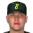

Franchise record book · FBL
Eugene Larks
Seasons covered: 2002–2002. Only games played for this franchise count.
This club has no pre-2002 history in the export, so its record book is the 2002 season to date. Rate records need 3.1 PA or 1 inning per team game.
Home runs
| # | Player | Season | Team | Home runs |
|---|---|---|---|---|
| #1 | 2002 (FBL) |  Eugene Larks Eugene Larks | 7 | |
| #2 | 2002 (FBL) | Eugene Larks | 5 | |
| #3 | 2002 (FBL) | Eugene Larks | 5 | |
| #4 | 2002 (FBL) | Eugene Larks | 4 | |
| #5 | 2002 (FBL) | Eugene Larks | 3 | |
| #6 | 2002 (FBL) | Eugene Larks | 2 | |
| #7 | 2002 (FBL) | Eugene Larks | 1 | |
| #8 | 2002 (FBL) | Eugene Larks | 1 | |
| #9 | 2002 (FBL) | Eugene Larks | 1 | |
| #10 | 2002 (FBL) | Eugene Larks | 1 |
Hits
| # | Player | Season | Team | Hits |
|---|---|---|---|---|
| #1 | 2002 (FBL) | Eugene Larks | 56 | |
| #2 | 2002 (FBL) | Eugene Larks | 45 | |
| #3 | 2002 (FBL) | Eugene Larks | 41 | |
| #4 | 2002 (FBL) | Eugene Larks | 40 | |
| #5 | 2002 (FBL) | Eugene Larks | 36 | |
| #6 | 2002 (FBL) | Eugene Larks | 36 | |
| #7 | 2002 (FBL) | Eugene Larks | 30 | |
| #8 | 2002 (FBL) | Eugene Larks | 30 | |
| #9 | 2002 (FBL) | Eugene Larks | 26 | |
| #10 | 2002 (FBL) | Eugene Larks | 14 |
RBI
| # | Player | Season | Team | RBI |
|---|---|---|---|---|
| #1 | 2002 (FBL) | Eugene Larks | 23 | |
| #2 | 2002 (FBL) | Eugene Larks | 22 | |
| #3 | 2002 (FBL) | Eugene Larks | 21 | |
| #4 | 2002 (FBL) | Eugene Larks | 18 | |
| #5 | 2002 (FBL) | Eugene Larks | 18 | |
| #6 | 2002 (FBL) | Eugene Larks | 18 | |
| #7 | 2002 (FBL) | Eugene Larks | 17 | |
| #8 | 2002 (FBL) | Eugene Larks | 15 | |
| #9 | 2002 (FBL) | Eugene Larks | 15 | |
| #10 | 2002 (FBL) | Eugene Larks | 5 |
Runs
| # | Player | Season | Team | Runs |
|---|---|---|---|---|
| #1 | 2002 (FBL) | Eugene Larks | 32 | |
| #2 | 2002 (FBL) | Eugene Larks | 28 | |
| #3 | 2002 (FBL) | Eugene Larks | 23 | |
| #4 | 2002 (FBL) | Eugene Larks | 20 | |
| #5 | 2002 (FBL) | Eugene Larks | 18 | |
| #6 | 2002 (FBL) | Eugene Larks | 18 | |
| #7 | 2002 (FBL) | Eugene Larks | 18 | |
| #8 | 2002 (FBL) | Eugene Larks | 15 | |
| #9 | 2002 (FBL) | Eugene Larks | 14 | |
| #10 | 2002 (FBL) | Eugene Larks | 4 |
Stolen bases
| # | Player | Season | Team | Stolen bases |
|---|---|---|---|---|
| #1 | 2002 (FBL) | Eugene Larks | 6 | |
| #2 | 2002 (FBL) | Eugene Larks | 6 | |
| #3 | 2002 (FBL) | Eugene Larks | 5 | |
| #4 | 2002 (FBL) | Eugene Larks | 4 | |
| #5 | 2002 (FBL) | Eugene Larks | 4 | |
| #6 | 2002 (FBL) | Eugene Larks | 3 | |
| #7 | 2002 (FBL) | Eugene Larks | 1 | |
| #8 | 2002 (FBL) | Eugene Larks | 1 | |
| #9 | 2002 (FBL) | Eugene Larks | 1 | |
| #10 | 2002 (FBL) | Eugene Larks | 0 |
Doubles
| # | Player | Season | Team | Doubles |
|---|---|---|---|---|
| #1 | 2002 (FBL) | Eugene Larks | 9 | |
| #2 | 2002 (FBL) | Eugene Larks | 9 | |
| #3 | 2002 (FBL) | Eugene Larks | 8 | |
| #4 | 2002 (FBL) | Eugene Larks | 8 | |
| #5 | 2002 (FBL) | Eugene Larks | 8 | |
| #6 | 2002 (FBL) | Eugene Larks | 8 | |
| #7 | 2002 (FBL) | Eugene Larks | 6 | |
| #8 | 2002 (FBL) | Eugene Larks | 6 | |
| #9 | 2002 (FBL) | Eugene Larks | 6 | |
| #10 | 2002 (FBL) | Eugene Larks | 4 |
Triples
| # | Player | Season | Team | Triples |
|---|---|---|---|---|
| #1 | 2002 (FBL) | Eugene Larks | 3 | |
| #2 | 2002 (FBL) | Eugene Larks | 2 | |
| #3 | 2002 (FBL) | Eugene Larks | 2 | |
| #4 | 2002 (FBL) | Eugene Larks | 1 | |
| #5 | 2002 (FBL) | Eugene Larks | 1 | |
| #6 | 2002 (FBL) | Eugene Larks | 1 | |
| #7 | 2002 (FBL) | Eugene Larks | 0 | |
| #8 | 2002 (FBL) | Eugene Larks | 0 | |
| #9 | 2002 (FBL) | Eugene Larks | 0 | |
| #10 | 2002 (FBL) | Eugene Larks | 0 |
Walks
| # | Player | Season | Team | Walks |
|---|---|---|---|---|
| #1 | 2002 (FBL) | Eugene Larks | 25 | |
| #2 | 2002 (FBL) | Eugene Larks | 19 | |
| #3 | 2002 (FBL) | Eugene Larks | 15 | |
| #4 | 2002 (FBL) | Eugene Larks | 13 | |
| #5 | 2002 (FBL) | Eugene Larks | 12 | |
| #6 | 2002 (FBL) | Eugene Larks | 12 | |
| #7 | 2002 (FBL) | Eugene Larks | 9 | |
| #8 | 2002 (FBL) | Eugene Larks | 8 | |
| #9 | 2002 (FBL) | Eugene Larks | 7 | |
| #10 | 2002 (FBL) | Eugene Larks | 4 |
Total bases
| # | Player | Season | Team | Total bases |
|---|---|---|---|---|
| #1 | 2002 (FBL) | Eugene Larks | 86 | |
| #2 | 2002 (FBL) | Eugene Larks | 77 | |
| #3 | 2002 (FBL) | Eugene Larks | 68 | |
| #4 | 2002 (FBL) | Eugene Larks | 55 | |
| #5 | 2002 (FBL) | Eugene Larks | 51 | |
| #6 | 2002 (FBL) | Eugene Larks | 47 | |
| #7 | 2002 (FBL) | Eugene Larks | 44 | |
| #8 | 2002 (FBL) | Eugene Larks | 44 | |
| #9 | 2002 (FBL) | Eugene Larks | 43 | |
| #10 | 2002 (FBL) | Eugene Larks | 21 |
Batting average qualified
| # | Player | Season | Team | Batting average |
|---|---|---|---|---|
| #1 | 2002 (FBL) | Eugene Larks | .368 | |
| #2 | 2002 (FBL) | Eugene Larks | .321 | |
| #3 | 2002 (FBL) | Eugene Larks | .306 | |
| #4 | 2002 (FBL) | Eugene Larks | .288 | |
| #5 | 2002 (FBL) | Eugene Larks | .276 | |
| #6 | 2002 (FBL) | Eugene Larks | .263 | |
| #7 | 2002 (FBL) | Eugene Larks | .248 | |
| #8 | 2002 (FBL) | Eugene Larks | .234 | |
| #9 | 2002 (FBL) | Eugene Larks | .218 |
On-base % qualified
| # | Player | Season | Team | On-base % |
|---|---|---|---|---|
| #1 | 2002 (FBL) | Eugene Larks | .423 | |
| #2 | 2002 (FBL) | Eugene Larks | .404 | |
| #3 | 2002 (FBL) | Eugene Larks | .381 | |
| #4 | 2002 (FBL) | Eugene Larks | .350 | |
| #5 | 2002 (FBL) | Eugene Larks | .345 | |
| #6 | 2002 (FBL) | Eugene Larks | .333 | |
| #7 | 2002 (FBL) | Eugene Larks | .327 | |
| #8 | 2002 (FBL) | Eugene Larks | .307 | |
| #9 | 2002 (FBL) | Eugene Larks | .286 |
Slugging % qualified
| # | Player | Season | Team | Slugging % |
|---|---|---|---|---|
| #1 | 2002 (FBL) | Eugene Larks | .566 | |
| #2 | 2002 (FBL) | Eugene Larks | .550 | |
| #3 | 2002 (FBL) | Eugene Larks | .507 | |
| #4 | 2002 (FBL) | Eugene Larks | .386 | |
| #5 | 2002 (FBL) | Eugene Larks | .379 | |
| #6 | 2002 (FBL) | Eugene Larks | .376 | |
| #7 | 2002 (FBL) | Eugene Larks | .370 | |
| #8 | 2002 (FBL) | Eugene Larks | .352 | |
| #9 | 2002 (FBL) | Eugene Larks | .336 |
OPS qualified
| # | Player | Season | Team | OPS |
|---|---|---|---|---|
| #1 | 2002 (FBL) | Eugene Larks | .973 | |
| #2 | 2002 (FBL) | Eugene Larks | .970 | |
| #3 | 2002 (FBL) | Eugene Larks | .853 | |
| #4 | 2002 (FBL) | Eugene Larks | .767 | |
| #5 | 2002 (FBL) | Eugene Larks | .726 | |
| #6 | 2002 (FBL) | Eugene Larks | .706 | |
| #7 | 2002 (FBL) | Eugene Larks | .669 | |
| #8 | 2002 (FBL) | Eugene Larks | .659 | |
| #9 | 2002 (FBL) | Eugene Larks | .655 |
WAR (OOTP)
| # | Player | Season | Team | WAR (OOTP) |
|---|---|---|---|---|
| #1 | 2002 (FBL) | Eugene Larks | 1.9 | |
| #2 | 2002 (FBL) | Eugene Larks | 1.3 | |
| #3 | 2002 (FBL) | Eugene Larks | 1.1 | |
| #4 | 2002 (FBL) | Eugene Larks | 0.9 | |
| #5 | 2002 (FBL) | Eugene Larks | 0.6 | |
| #6 | 2002 (FBL) | Eugene Larks | 0.3 | |
| #7 | 2002 (FBL) | Eugene Larks | 0.2 | |
| #8 | 2002 (FBL) | Eugene Larks | 0.0 | |
| #9 | 2002 (FBL) | Eugene Larks | 0.0 | |
| #10 |  Ryan Stegall • | 2002 (FBL) | Eugene Larks | 0.0 |
Wins
| # | Player | Season | Team | Wins |
|---|---|---|---|---|
| #1 | 2002 (FBL) | Eugene Larks | 6 | |
| #2 | 2002 (FBL) | Eugene Larks | 5 | |
| #3 | 2002 (FBL) | Eugene Larks | 3 | |
| #4 | 2002 (FBL) | Eugene Larks | 2 | |
| #5 | 2002 (FBL) | Eugene Larks | 2 | |
| #6 | 2002 (FBL) | Eugene Larks | 1 | |
| #7 | 2002 (FBL) | Eugene Larks | 1 | |
| #8 | 2002 (FBL) | Eugene Larks | 1 | |
| #9 | 2002 (FBL) | Eugene Larks | 0 | |
| #10 | 2002 (FBL) | Eugene Larks | 0 |
Strikeouts
| # | Player | Season | Team | Strikeouts |
|---|---|---|---|---|
| #1 | 2002 (FBL) | Eugene Larks | 39 | |
| #2 | 2002 (FBL) | Eugene Larks | 33 | |
| #3 | 2002 (FBL) | Eugene Larks | 25 | |
| #4 | 2002 (FBL) | Eugene Larks | 23 | |
| #5 | 2002 (FBL) | Eugene Larks | 18 | |
| #6 | 2002 (FBL) | Eugene Larks | 17 | |
| #7 | 2002 (FBL) | Eugene Larks | 10 | |
| #8 | 2002 (FBL) | Eugene Larks | 10 | |
| #9 | 2002 (FBL) | Eugene Larks | 10 | |
| #10 | 2002 (FBL) | Eugene Larks | 9 |
Saves
| # | Player | Season | Team | Saves |
|---|---|---|---|---|
| #1 | 2002 (FBL) | Eugene Larks | 10 | |
| #2 | 2002 (FBL) | Eugene Larks | 2 | |
| #3 | 2002 (FBL) | Eugene Larks | 0 | |
| #4 | 2002 (FBL) | Eugene Larks | 0 | |
| #5 | 2002 (FBL) | Eugene Larks | 0 | |
| #6 | 2002 (FBL) | Eugene Larks | 0 | |
| #7 | 2002 (FBL) | Eugene Larks | 0 | |
| #8 | Jason Jacome • | 2002 (FBL) | Eugene Larks | 0 |
| #9 | 2002 (FBL) | Eugene Larks | 0 | |
| #10 | 2002 (FBL) | Eugene Larks | 0 |
Innings
| # | Player | Season | Team | Innings |
|---|---|---|---|---|
| #1 | 2002 (FBL) | Eugene Larks | 60.0 | |
| #2 | 2002 (FBL) | Eugene Larks | 56.1 | |
| #3 | 2002 (FBL) | Eugene Larks | 49.2 | |
| #4 | 2002 (FBL) | Eugene Larks | 40.2 | |
| #5 | 2002 (FBL) | Eugene Larks | 32.0 | |
| #6 | 2002 (FBL) | Eugene Larks | 16.1 | |
| #7 | 2002 (FBL) | Eugene Larks | 16.1 | |
| #8 | 2002 (FBL) | Eugene Larks | 15.2 | |
| #9 | 2002 (FBL) | Eugene Larks | 14.2 | |
| #10 | 2002 (FBL) | Eugene Larks | 11.2 |
Complete games
| # | Player | Season | Team | Complete games |
|---|---|---|---|---|
| #1 | 2002 (FBL) | Eugene Larks | 1 | |
| #2 | 2002 (FBL) | Eugene Larks | 1 | |
| #3 | 2002 (FBL) | Eugene Larks | 0 | |
| #4 | 2002 (FBL) | Eugene Larks | 0 | |
| #5 | 2002 (FBL) | Eugene Larks | 0 | |
| #6 | 2002 (FBL) | Eugene Larks | 0 | |
| #7 | 2002 (FBL) | Eugene Larks | 0 | |
| #8 | Jason Jacome • | 2002 (FBL) | Eugene Larks | 0 |
| #9 | 2002 (FBL) | Eugene Larks | 0 | |
| #10 | 2002 (FBL) | Eugene Larks | 0 |
Shutouts
| # | Player | Season | Team | Shutouts |
|---|---|---|---|---|
| #1 | 2002 (FBL) | Eugene Larks | 0 | |
| #2 | 2002 (FBL) | Eugene Larks | 0 | |
| #3 | 2002 (FBL) | Eugene Larks | 0 | |
| #4 | 2002 (FBL) | Eugene Larks | 0 | |
| #5 | 2002 (FBL) | Eugene Larks | 0 | |
| #6 | Jason Jacome • | 2002 (FBL) | Eugene Larks | 0 |
| #7 | 2002 (FBL) | Eugene Larks | 0 | |
| #8 | 2002 (FBL) | Eugene Larks | 0 | |
| #9 | 2002 (FBL) | Eugene Larks | 0 | |
| #10 | 2002 (FBL) | Eugene Larks | 0 |
ERA qualified
| # | Player | Season | Team | ERA |
|---|---|---|---|---|
| #1 | 2002 (FBL) | Eugene Larks | 2.24 | |
| #2 | 2002 (FBL) | Eugene Larks | 3.26 | |
| #3 | 2002 (FBL) | Eugene Larks | 5.40 | |
| #4 | 2002 (FBL) | Eugene Larks | 5.53 |
WHIP qualified
| # | Player | Season | Team | WHIP |
|---|---|---|---|---|
| #1 | 2002 (FBL) | Eugene Larks | 1.10 | |
| #2 | 2002 (FBL) | Eugene Larks | 1.33 | |
| #3 | 2002 (FBL) | Eugene Larks | 1.55 | |
| #4 | 2002 (FBL) | Eugene Larks | 1.58 |
K/9 qualified
| # | Player | Season | Team | K/9 |
|---|---|---|---|---|
| #1 | 2002 (FBL) | Eugene Larks | 6.0 | |
| #2 | 2002 (FBL) | Eugene Larks | 5.8 | |
| #3 | 2002 (FBL) | Eugene Larks | 5.1 | |
| #4 | 2002 (FBL) | Eugene Larks | 4.0 |
WAR (OOTP)
| # | Player | Season | Team | WAR (OOTP) |
|---|---|---|---|---|
| #1 | 2002 (FBL) | Eugene Larks | 1.5 | |
| #2 | 2002 (FBL) | Eugene Larks | 0.9 | |
| #3 | 2002 (FBL) | Eugene Larks | 0.8 | |
| #4 | 2002 (FBL) | Eugene Larks | 0.4 | |
| #5 | 2002 (FBL) | Eugene Larks | 0.3 | |
| #6 | 2002 (FBL) | Eugene Larks | 0.2 | |
| #7 | 2002 (FBL) | Eugene Larks | 0.1 | |
| #8 | 2002 (FBL) | Eugene Larks | -0.1 | |
| #9 | 2002 (FBL) | Eugene Larks | -0.1 | |
| #10 | Jason Jacome • | 2002 (FBL) | Eugene Larks | -0.2 |
Home runs
| # | Player | Years | Home runs |
|---|---|---|---|
| #1 | 1989–02 | 7 | |
| #2 | 1998–02 | 5 | |
| #3 | 2001–02 | 5 | |
| #4 | 1998–02 | 4 | |
| #5 | 1991–02 | 3 | |
| #6 | 2001–02 | 2 | |
| #7 | 1995–02 | 1 | |
| #8 | 2001–02 | 1 | |
| #9 | 1997–02 | 1 | |
| #10 | 1988–02 | 1 |
Hits
| # | Player | Years | Hits |
|---|---|---|---|
| #1 | 1998–02 | 56 | |
| #2 | 1989–02 | 45 | |
| #3 | 2001–02 | 41 | |
| #4 | 1995–02 | 40 | |
| #5 | 2001–02 | 36 | |
| #6 | 1991–02 | 36 | |
| #7 | 2001–02 | 30 | |
| #8 | 1988–02 | 30 | |
| #9 | 1998–02 | 26 | |
| #10 | 1997–02 | 14 |
RBI
| # | Player | Years | RBI |
|---|---|---|---|
| #1 | 1989–02 | 23 | |
| #2 | 2001–02 | 22 | |
| #3 | 2001–02 | 21 | |
| #4 | 1995–02 | 18 | |
| #5 | 1991–02 | 18 | |
| #6 | 1988–02 | 18 | |
| #7 | 1998–02 | 17 | |
| #8 | 2001–02 | 15 | |
| #9 | 1998–02 | 15 | |
| #10 | 1997–02 | 5 |
Runs
| # | Player | Years | Runs |
|---|---|---|---|
| #1 | 1998–02 | 32 | |
| #2 | 1989–02 | 28 | |
| #3 | 2001–02 | 23 | |
| #4 | 1988–02 | 20 | |
| #5 | 2001–02 | 18 | |
| #6 | 2001–02 | 18 | |
| #7 | 1991–02 | 18 | |
| #8 | 1995–02 | 15 | |
| #9 | 1998–02 | 14 | |
| #10 | 1997–02 | 4 |
Stolen bases
| # | Player | Years | Stolen bases |
|---|---|---|---|
| #1 | 1998–02 | 6 | |
| #2 | 1991–02 | 6 | |
| #3 | 1988–02 | 5 | |
| #4 | 2001–02 | 4 | |
| #5 | 2001–02 | 4 | |
| #6 | 1998–02 | 3 | |
| #7 | 2001–02 | 1 | |
| #8 | 2002–02 | 1 | |
| #9 | 2002–02 | 1 | |
| #10 | 1992–02 | 0 |
Doubles
| # | Player | Years | Doubles |
|---|---|---|---|
| #1 | 1998–02 | 9 | |
| #2 | 1989–02 | 9 | |
| #3 | 1995–02 | 8 | |
| #4 | 2001–02 | 8 | |
| #5 | 2001–02 | 8 | |
| #6 | 1991–02 | 8 | |
| #7 | 2001–02 | 6 | |
| #8 | 1998–02 | 6 | |
| #9 | 1988–02 | 6 | |
| #10 | 1997–02 | 4 |
Triples
| # | Player | Years | Triples |
|---|---|---|---|
| #1 | 1998–02 | 3 | |
| #2 | 2001–02 | 2 | |
| #3 | 1988–02 | 2 | |
| #4 | 2001–02 | 1 | |
| #5 | 1991–02 | 1 | |
| #6 | 1989–02 | 1 | |
| #7 | 1992–02 | 0 | |
| #8 | 1995–02 | 0 | |
| #9 | 2001–02 | 0 | |
| #10 | 2000–02 | 0 |
Walks
| # | Player | Years | Walks |
|---|---|---|---|
| #1 | 1989–02 | 25 | |
| #2 | 1988–02 | 19 | |
| #3 | 1991–02 | 15 | |
| #4 | 2001–02 | 13 | |
| #5 | 2001–02 | 12 | |
| #6 | 1998–02 | 12 | |
| #7 | 1998–02 | 9 | |
| #8 | 2001–02 | 8 | |
| #9 | 1995–02 | 7 | |
| #10 | 1997–02 | 4 |
Total bases
| # | Player | Years | Total bases |
|---|---|---|---|
| #1 | 1998–02 | 86 | |
| #2 | 1989–02 | 77 | |
| #3 | 2001–02 | 68 | |
| #4 | 1991–02 | 55 | |
| #5 | 1995–02 | 51 | |
| #6 | 2001–02 | 47 | |
| #7 | 2001–02 | 44 | |
| #8 | 1998–02 | 44 | |
| #9 | 1988–02 | 43 | |
| #10 | 1997–02 | 21 |
Batting average min 2,000 PA
| # | Player | Years | Batting average |
|---|
On-base % min 2,000 PA
| # | Player | Years | On-base % |
|---|
Slugging % min 2,000 PA
| # | Player | Years | Slugging % |
|---|
OPS min 2,000 PA
| # | Player | Years | OPS |
|---|
WAR (OOTP)
| # | Player | Years | WAR (OOTP) |
|---|---|---|---|
| #1 | 1998–02 | 1.9 | |
| #2 | 1989–02 | 1.3 | |
| #3 | 2001–02 | 1.1 | |
| #4 | 2001–02 | 0.9 | |
| #5 | 1988–02 | 0.6 | |
| #6 | 2001–02 | 0.3 | |
| #7 | 1997–02 | 0.2 | |
| #8 | 2000–02 | 0.0 | |
| #9 | 1995–02 | 0.0 | |
| #10 | Ryan Stegall • | 2002–02 | 0.0 |
Wins
| # | Player | Years | Wins |
|---|---|---|---|
| #1 | 2002–02 | 6 | |
| #2 | 1994–02 | 5 | |
| #3 | 2002–02 | 3 | |
| #4 | 1990–02 | 2 | |
| #5 | 1997–02 | 2 | |
| #6 | 1999–02 | 1 | |
| #7 | 2000–02 | 1 | |
| #8 | 2002–02 | 1 | |
| #9 | 2000–02 | 0 | |
| #10 | 1997–02 | 0 |
Strikeouts
| # | Player | Years | Strikeouts |
|---|---|---|---|
| #1 | 1995–02 | 39 | |
| #2 | 1994–02 | 33 | |
| #3 | 2002–02 | 25 | |
| #4 | 1997–02 | 23 | |
| #5 | 2002–02 | 18 | |
| #6 | 2000–02 | 17 | |
| #7 | 2000–02 | 10 | |
| #8 | 1997–02 | 10 | |
| #9 | 1990–02 | 10 | |
| #10 | 2002–02 | 9 |
Saves
| # | Player | Years | Saves |
|---|---|---|---|
| #1 | 1995–02 | 10 | |
| #2 | 2002–02 | 2 | |
| #3 | 1999–02 | 0 | |
| #4 | 2000–02 | 0 | |
| #5 | 2000–02 | 0 | |
| #6 | 1997–02 | 0 | |
| #7 | 1990–02 | 0 | |
| #8 | Jason Jacome • | 1994–02 | 0 |
| #9 | 1997–02 | 0 | |
| #10 | 2002–02 | 0 |
Innings
| # | Player | Years | Innings |
|---|---|---|---|
| #1 | 1995–02 | 60.0 | |
| #2 | 2002–02 | 56.1 | |
| #3 | 1994–02 | 49.2 | |
| #4 | 1997–02 | 40.2 | |
| #5 | 2002–02 | 32.0 | |
| #6 | 2000–02 | 16.1 | |
| #7 | 2002–02 | 16.1 | |
| #8 | 2000–02 | 15.2 | |
| #9 | 1997–02 | 14.2 | |
| #10 | 1995–02 | 11.2 |
Complete games
| # | Player | Years | Complete games |
|---|---|---|---|
| #1 | 1995–02 | 1 | |
| #2 | 1994–02 | 1 | |
| #3 | 1999–02 | 0 | |
| #4 | 2000–02 | 0 | |
| #5 | 2000–02 | 0 | |
| #6 | 1997–02 | 0 | |
| #7 | 1990–02 | 0 | |
| #8 | Jason Jacome • | 1994–02 | 0 |
| #9 | 2002–02 | 0 | |
| #10 | 1997–02 | 0 |
Shutouts
| # | Player | Years | Shutouts |
|---|---|---|---|
| #1 | 1999–02 | 0 | |
| #2 | 2000–02 | 0 | |
| #3 | 2000–02 | 0 | |
| #4 | 1997–02 | 0 | |
| #5 | 1990–02 | 0 | |
| #6 | Jason Jacome • | 1994–02 | 0 |
| #7 | 2002–02 | 0 | |
| #8 | 1997–02 | 0 | |
| #9 | 2002–02 | 0 | |
| #10 | 1995–02 | 0 |
ERA min 500 IP
| # | Player | Years | ERA |
|---|
WHIP min 500 IP
| # | Player | Years | WHIP |
|---|
K/9 min 500 IP
| # | Player | Years | K/9 |
|---|
WAR (OOTP)
| # | Player | Years | WAR (OOTP) |
|---|---|---|---|
| #1 | 2002–02 | 1.5 | |
| #2 | 1994–02 | 0.9 | |
| #3 | 1995–02 | 0.8 | |
| #4 | 2002–02 | 0.4 | |
| #5 | 2000–02 | 0.3 | |
| #6 | 1995–02 | 0.2 | |
| #7 | 2000–02 | 0.1 | |
| #8 | 2002–02 | -0.1 | |
| #9 | 1997–02 | -0.1 | |
| #10 | Jason Jacome • | 1994–02 | -0.2 |